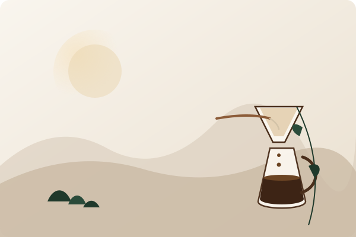
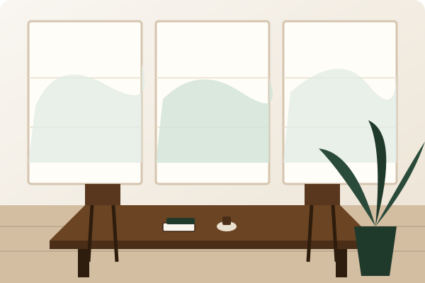

01
原生溯源
堅持嚴選高海拔產區單一莊園咖啡豆，支持友善環境的永續耕作法，每批生豆皆可清晰溯源，品嚐最乾淨純淨的風土特徵。
從一顆生豆的誕生，到一杯散發熱氣的香醇，我們堅持在步調緊湊的日常裡，為你留下一份平靜而真實的溫度。

晴天咖啡的誕生，源於一段想要「慢下來」的心願。在這個凡事追求效率與速度的時代，我們常常走得太急，忘了給自己一杯咖啡的時間，去感受微風的吹拂與陽光的溫暖。
「晴天」對我們而言，不單單是萬里無雲的天空，更是一種內在坦然、清透的心境。我們希望打造一個結合神祕靜謐與自然生機的空間，讓走進門的每一位朋友，都能聞著豆香放鬆肩膀，在熟悉甘甜的滋味裡重拾專屬自己的步調。
我們堅信，一杯真正動人的好咖啡，來自對土地的敬意、對工藝的專注，以及對人心的溫柔對待。
堅持嚴選高海拔產區單一莊園咖啡豆，支持友善環境的永續耕作法，每批生豆皆可清晰溯源，品嚐最乾淨純淨的風土特徵。
重視每一批生豆的水分含量與密度，採用小量微批次烘焙曲線。透過烘豆師的敏銳感官與細緻控溫，完整保留豆子的芳香精華。
空間奉行減法美學，以原木、綠植與柔和光線取代多餘的繁瑣裝飾。期望客人在最無負擔的自然氛圍中，重獲心靈的自在與寧靜。

走進晴天咖啡，映入眼簾的是大片落地的柔和自然光。原木桌面的溫潤手感與隨風微動的綠意盆栽，營造出遠離塵囂的靜謐氛圍。
我們特意拉寬座席間距，保有彼此舒適呼吸的私密感。不論是一個人專注閱讀、構思靈感，或是與兩三好友促膝小聚，這裡都是能讓你卸下防備、安心停駐的自在歸宿。